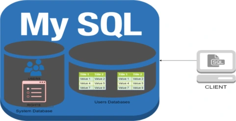
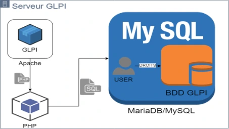
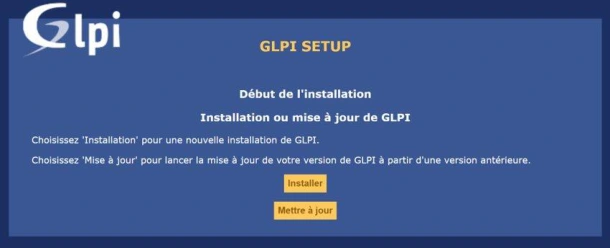
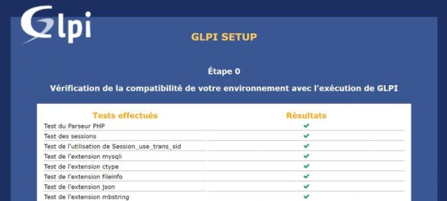
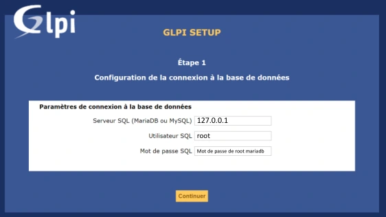

Transcription fidèle du support de formation, avec mise en forme adaptée à la lecture. Les identifiants secrets du laboratoire sont remplacés par une indication du formateur ; les coquilles techniques sont expliquées séparément dans le cours optimisé.
Administration GLPI
Module 01 – Présentation de l'environnement - Installation de GLPI
Objectifs
Présentation de l’environnement de formation
Présentation du projet GLPI par son site internet
Présentation des principaux composants logiciels nécessaires
Installation du service de base de données MySQL/MariaDB
Installation du service Web Apache2
Installation de l’interpréteur PHP et des modules requis par GLPI
Récupération du code de GLPI et lancement du paramétrage initial
Croquis extrait du support Drive : réseau de formation GLPI. Visuel isolé, sans diapositive, en-tête ni logo ; aucun ajout IA.
Contexte
Administrateur système / bureautique
Mise en place d’un GLPI au sein de l’entreprise
La gestion et l’hébergement par Olympus
Authentification centralisée et habilitations GLPI dynamiques
Inventaire du matériel d’Olympus
Traitement uniformisé et automatisé des tickets
Inventaire régulier des machines de l’entreprise Olympus
Présentation de GLPI
Présentation de GLPI
G.L.P.I : Gestion Libre de Parc Informatique
ITSM (IT Service Management) conforme ITIL
Logiciel libre sous licence GPL 100% libre
Logiciel complet pour la gestion de parc et centre de services
Plusieurs langues et plug-ins de disponibles
Installation possible sous Windows et Linux
Pour les petits comme les grands systèmes d’information
Les composants de GLPI
Installation – Serveur Web
Application web : nécessite un serveur web avec le moteur PHP
Linux : Apache2 ou Windows : IIS avec PHP ou Nginx avec PHP
Installation sous Linux : paquets apache2.4 et php7.4
Extensions PHP obligatoires / recommandées :
php-mysql
php-ldap
php-bz2
php-mbstring
php-xmlrpc
php-apcu-bc
php-curl
php-imap
php-cas
php-gd
php-intl
php-xml
php-zip
Installation – Serveur de base de données
Installation – Serveur de base de données
GLPI a besoin de stocker des informations en base de données et pour cela il utilise un SGBD (Système de Gestion de Base de Données)
SGBD pris en charge par GLPI
MySQL
MariaDB
Installation de MariaDB
Paquet : mariadb-server

Visuel isolé — Module 01 - Support de cours
Fonctionnement – Serveur de base de données
Composants du serveur GLPI
Sécurisation - Serveur de bases de données
Sécurisation du serveur de base de données MariaDB
# apt install mariadb-server mariadb-client
# mysql_secure_installation Change the root password? [Y/n] n # mot de passe pour l’utilisateur root dans MySQL Remove anonymous users? [Y/n] Y # ne permettre l’accès à mariadb que pour root Disallow root login remotely? [Y/n] Y # empêcher un accès distant à mariadb Remove test database and access to it? [Y/n] Y # supprimer la base de données de test Reload privilege tables now? [Y/n] Y # recharger mariadb avec cette nouvelle configuration

Visuel isolé — Module 01 - Support de cours
Paramétrage - Serveur de bases de données
Sécurisation du serveur de base de données MariaDB
Paramétrage du serveur de base de données MariaDB
Connexion au Shell du SGBD MariaDB
# mysql –u root –p
Création d’une base de données
mysql>create database glpidata;
Affectation des droits à l’utilisateur root de mariadb
mysql>grant all privileges on glpidata.* to root@localhost identified by '[mot de passe fourni par le formateur]';
Toutes les commandes MySQL doivent se terminer par un point-virgule.
Installation – Application GLPI
Récupération de l’archive GLPI sur le site de l’éditeur
Décompression à la racine du serveur web (/var/www/)
Accès à l’interface web de GLPI via l’URL «http://@ipSrvGLPI/glpi »*
* URL par défaut d’accès à l’application pouvant varier
Configuration – Application GLPI
Post configuration - Language
Configuration – Application GLPI
Post configuration - Installation ou mise à jour
Visuel isolé — Module 01 - Support de cours

Visuel isolé — Module 01 - Support de cours
Configuration – Application GLPI
Post configuration - Test des prérequis
Configuration – Application GLPI
Post configuration - Accès à la base de données
127.0.0.1
root
Mot de passe de root mariadb

Visuel isolé — Module 01 - Support de cours

Visuel isolé — Module 01 - Support de cours
Configuration – Application GLPI
Post configuration - Initialisation d'une base de données
Configuration – Application GLPI
Comptes par défauts
glpi/[mot de passe fourni par le formateur] pour le compte administrateur
tech/[mot de passe fourni par le formateur] pour le compte technicien
normal/[mot de passe fourni par le formateur] pour le compte normal
post-only/[mot de passe fourni par le formateur] pour le compte postonly
Changement des mots de passe par défaut
Désactivation du fichier « install/install.php »
Définition d’un nom d’hôte d’accès à l’application